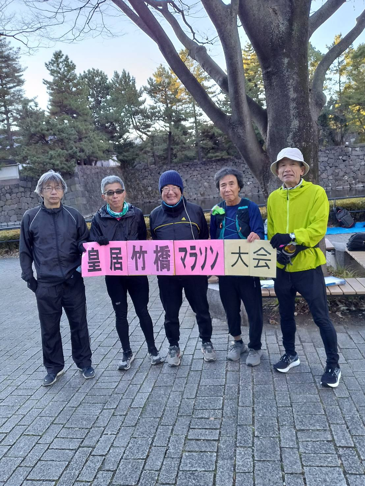

2025-01-04 05:56:25
2025年(令和7年) 1月4日（土） 晴れ 2～9℃ （報告＝宮野）
| No. | 会員番号 | 氏名 | 種目 | タイム |
|---|---|---|---|---|
| 1 | 204 | 村地 哲徳 | フル | 2:58:52 |
| 2 | 273 | 福井 康太 | フル | 4:28:24 |
| 3 | 182 | 堀池 計年 | フル | 5:05:01 |
| 4 | 129 | 中家 和宏 | フル | 5:08:56 |
| 5 | 208 | 盛井 恒男 | フル | 5:17:51 |
| 6 | 015 | 辰巳 順一 | フル | 5:44:16 |
| 7 | 066 | 大野 清美 | フル | 7:55:18 |
| 8 | 105 | 宮野 繁 | 20km | 4:27:15 |
| 9 | 166 | 山口 真澄 | 15km | 3:32:10 |
| 10 | 013 | 住川 万里子 | 10km | 2:30:00 |
村地さん335回目のサブスリー。マラソン終了後有志で新年会開催。
